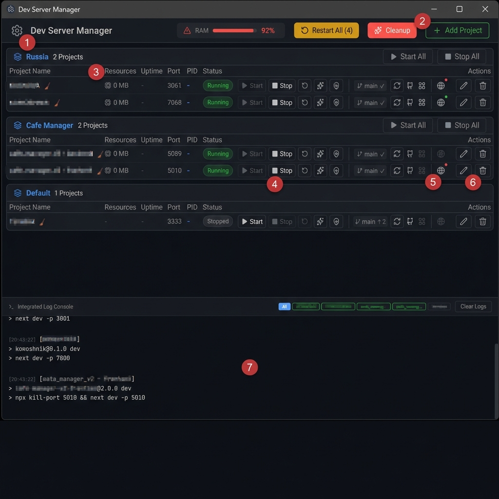
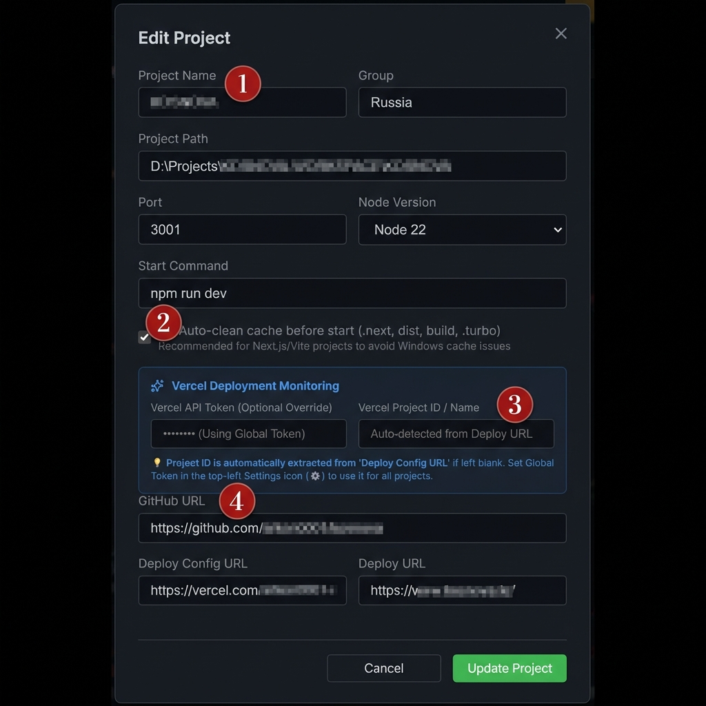

* GitHub Releases 페이지로 이동하여 최신 버전을 다운로드하세요.

앱 전체에 적용되는 설정을 관리합니다.
RAM Monitor: PC 전체 메모리가 90%를 넘으면 빨간색으로 경고합니다.
각 프로젝트가 내 PC 메모리를 얼마나 먹고 있는지(MB) 실시간으로 보여줍니다.
실행 중인 Port와 윈도우 PID도 즉시 확인할 수 있습니다.
연필 아이콘(✏️)을 눌러 프로젝트 경로, 실행 명령어, Vercel URL 등을 언제든 수정할 수 있습니다.
모든 프로젝트의 로그가 이곳에 모입니다. 상단의 프로젝트 이름 탭을 클릭하여 보고 싶은 로그만 필터링하세요.

프로젝트 이름과 그룹, 실제 경로를 설정합니다. Node 버전 정보를 확인할 수 있습니다.
Auto-clean cache: 체크 시, 서버 시작 전에 .next, dist 등의 캐시
폴더를 자동으로 지웁니다. 꼬임 방지에 탁월합니다.
별도 설정 없이도 Deploy Config URL(4번)만 있으면 프로젝트 ID를 자동으로 찾아냅니다.
GitHub 주소와 Vercel 배포 URL을 입력해두면 원클릭 이동 및 자동 상태 감시가 활성화됩니다.